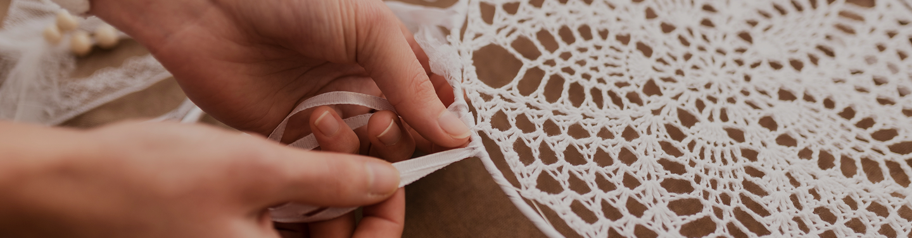
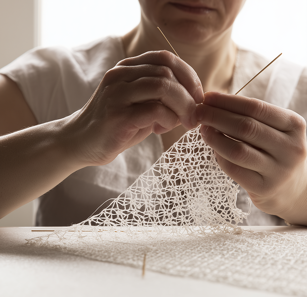

VAŠE PARČE TRADICIJE
POŠALJI UPIT



DOBROTSKA ČIPKA PO MJERI
Dobrotska čipka po mjeri nastaje polako i pažljivo, ponat po ponat, u skladu sa tradicionalnom vještinom koja je zaštićeno nematerijalno kulturno dobro Crne Gore. Svaki rad izrađuje se ručno, prema dogovoru, uz puno poštovanje vremena, materijala i same čipke.
Narudžbine po mjeri namijenjene su onima koji žele jedinstven komad, bilo da je riječ o dekorativnoj čipki, detalju za poseban predmet, poklonu ili radu sa posebnom simbolikom. Svaki motiv je unikatan i ne može se u potpunosti ponoviti.
Proces izrade započinje razgovorom i dogovorom oko veličine, namjene i osnovnog motiva. Vrijeme izrade zavisi od složenosti rada i unaprijed se definiše. Upravo to vrijeme i posvećenost čine svaki komad vrijednim.
Ako želite čipku izrađenu posebno za vas, pozivamo vas da pošaljete upit i započnete proces stvaranja jednog autentičnog komada dobrotske čipke.
VAŠE PARČE TRADICIJE